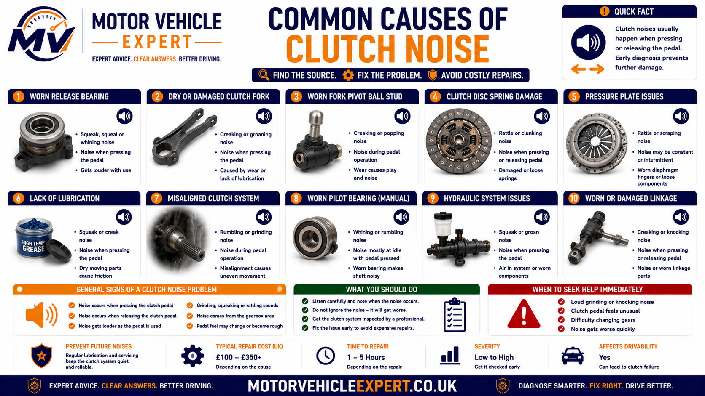
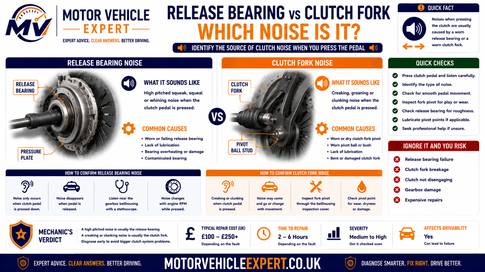
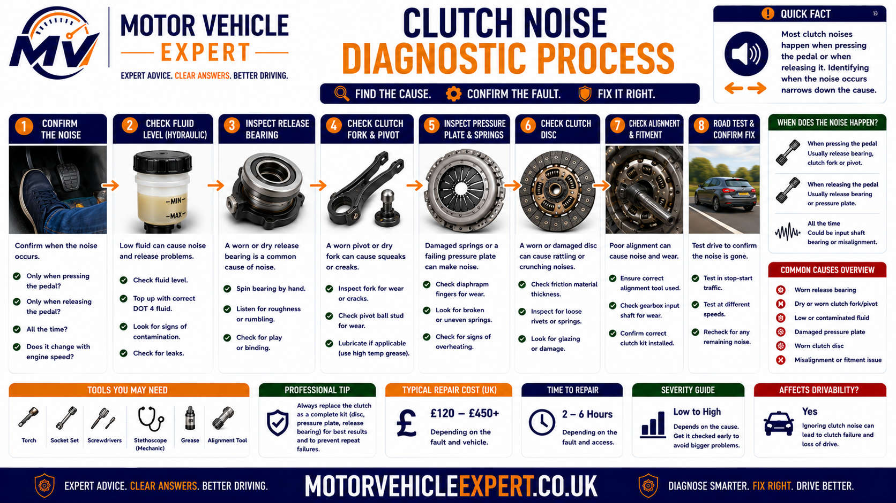
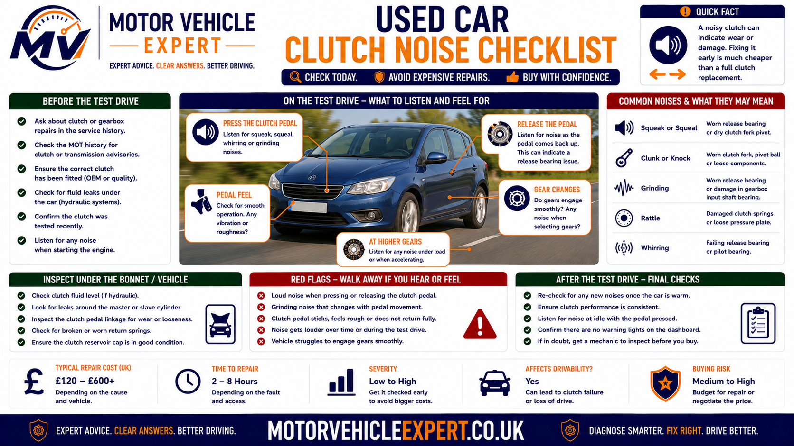

Use the Diagnostic App for Clutch Noise
Clutch noise can come from the pedal, cable, hydraulic cylinders, release bearing, clutch fork, pressure plate or gearbox. The Motor Vehicle Expert diagnostic app can help organise the symptoms before expensive clutch or gearbox work is authorised.
1. Describe the Sound
Record whether the noise is a squeak, click, chirp, rattle, rumble, scrape or grind.
2. Record Pedal Position
Note whether the noise begins as the pedal moves, while it is held down or as it is released.
3. Locate the Noise
Establish whether it comes from the cabin, bulkhead, gearbox exterior or inside the bellhousing.
4. Check Related Symptoms
Record pedal vibration, pressure loss, difficult gears, clutch slip, burning smell and recent repair history.
Noise that begins when the pedal is pressed points towards the loaded release system. Noise that disappears when pressed can point instead towards an input-shaft bearing or another component rotating while the clutch is engaged.
Why Does the Clutch Make Noise When Pressed?
Pressing the clutch pedal moves the pedal linkage, cable or hydraulic cylinders and loads the release bearing against the pressure plate. Noise that appears during this movement can come from any component along that operating path.
A squeak inside the cabin commonly comes from the pedal pivot, bushes, return spring, clevis or master-cylinder pushrod. Chirping, rumbling or grinding from the bellhousing is more concerning and can indicate a worn release bearing, damaged clutch fork, pressure-plate fault or incorrect installation.
Squeak Inside the Cabin
Check the pedal pivot, bushes, spring, clevis, cable and master-cylinder pushrod.
Chirp as the Pedal Is Pressed
The release bearing may begin making noise as it contacts the pressure-plate diaphragm.
Creak or Click From the Gearbox
The clutch fork, pivot, retaining clip or slave-cylinder pushrod may be dry, worn or damaged.
Grinding With the Pedal Down
Severe release-bearing, pressure-plate or internal clutch damage may be present.
Typical Evidence
- ✓ The sound comes from inside the cabin.
- ✓ The noise is present with the engine switched off.
- ✓ A pedal spring, bush or clevis can be heard moving.
- ✓ The sound follows pedal travel rather than engine speed.
- ✓ Gear selection and clutch operation remain normal.
- ✓ No rumbling or grinding comes from the bellhousing.
Typical Evidence
- ! The sound comes from the engine-and-gearbox joint.
- ! Noise appears only with the engine running.
- ! Chirping begins as the bearing contacts the pressure plate.
- ! Rumbling continues while the pedal is held down.
- ! Grinding or vibration can be felt through the pedal.
- ! Gear selection or pedal operation has changed.
| Noise pattern | Likely fault direction | Recommended response |
|---|---|---|
| Squeak with engine running or stopped | Pedal pivot, spring, clevis, cable or pushrod | Inspect the external pedal mechanism |
| Chirp begins as pedal pressure is applied | Release-bearing contact or fork movement | Listen at the bellhousing and compare pedal position |
| Rumble while pedal is held down | Release bearing or pilot bearing | Arrange professional clutch diagnosis |
| Noise disappears when pedal is pressed | Gearbox input-shaft bearing or engaged rotating component | Compare neutral noise with pedal pressed and released |
| Click or creak with rough pedal movement | Fork, pivot, linkage or hydraulic-cylinder movement | Inspect the complete release mechanism |
| Grinding with vibration or difficult gears | Severe internal bearing, fork or pressure-plate damage | Stop driving and arrange inspection |
Test the clutch with the engine switched off before assuming the gearbox must be removed. A noise that remains with the engine off is more likely to come from the pedal, cable, linkage or hydraulic components than a rotating internal bearing.
Continued use can damage pressure-plate fingers, the release fork, guide tube, clutch cover and flywheel. Stop driving if the noise is accompanied by pedal vibration, difficult gear selection, pressure loss or unreliable clutch operation.
Is Clutch Noise When Pressed Serious?
The seriousness depends on the sound, its location and whether clutch operation has changed. A light squeak from the pedal area may come from a dry pivot or bush, while rumbling, grinding or vibration from the bellhousing can indicate internal bearing, fork or pressure-plate damage.
Clutch noises should not be judged by volume alone. A quiet click caused by a cracked retaining clip can be more important than a loud but harmless pedal spring squeak. The complete pattern must include pedal feel, gear selection, engine speed, temperature and whether the noise is becoming worse.
Light Pedal Squeak
Usually Lower RiskA pedal pivot, bush, return spring, clevis or master-cylinder pushrod may require inspection.
Click or Creak From Gearbox
Moderate ConcernThe clutch fork, pivot, slave-cylinder pushrod or retaining hardware may be worn or moving incorrectly.
Rumble While Pedal Is Down
Significant FaultA worn release bearing, pilot bearing or damaged pressure- plate contact surface may be present.
Grinding With Pedal Vibration
UrgentSevere bearing, fork, guide-tube or pressure-plate damage can progress rapidly.
Important Warning Signs
- ✓ The sound has recently appeared.
- ✓ Noise becomes louder as the pedal moves.
- ✓ A click or creak can be felt through the pedal.
- ✓ Pedal pressure or return has changed.
- ✓ First or reverse gear has become more difficult.
- ✓ The fault followed recent clutch work.
Urgent Warning Signs
- ! Grinding comes from the bellhousing.
- ! Heavy vibration reaches the clutch pedal.
- ! The pedal remains down or loses pressure.
- ! Gears cannot be selected safely.
- ! A metallic crack or snap occurred.
- ! The clutch begins slipping or smelling burnt.
- ! Noise becomes rapidly worse during one journey.
A collapsing bearing, damaged fork or broken pressure-plate finger can prevent the clutch disengaging and leave the vehicle stuck in gear. Do not wait for grinding to become constant.
What Changes When the Clutch Pedal Is Pressed?
Pressing the clutch pedal moves several components and changes which bearings and rotating parts are loaded. Understanding that sequence helps explain why some noises begin when the pedal is pressed while others become quieter.
1. Pedal Mechanism Moves
The pivot, bushes, spring, clevis and pushrod or cable begin moving.
2. Cable or Hydraulics Operate
Pedal force travels through the cable or master and slave cylinders.
3. Clutch Fork Moves
On fork-operated systems, the fork rotates around its pivot.
4. Release Bearing Contacts
The bearing presses against the pressure-plate diaphragm fingers and begins rotating under load.
5. Pressure Plate Releases
Diaphragm movement reduces clamping force on the friction plate.
6. Clutch Plate Separates
Engine torque is disconnected from the gearbox input shaft.
7. Input-Shaft Load Changes
Gearbox input rotation and bearing load may reduce or alter.
8. Pilot Bearing Sees Speed Difference
Where fitted, the engine and input shaft may rotate at different speeds during disengagement.
| Pedal position | Components under greatest influence | Useful diagnostic clue |
|---|---|---|
| Pedal untouched | Clutch engaged and gearbox input shaft driven | Noise may involve input-shaft bearing or clutch damper |
| Pedal begins moving | Pedal linkage, cable, master cylinder and fork | Squeak or click may identify external movement |
| Release bearing first contacts | Release bearing and diaphragm fingers | Chirp beginning at this point supports bearing contact |
| Pedal held fully down | Release bearing remains loaded and clutch is disengaged | Rumble or grind supports an internal bearing fault |
| Pedal is released | Fork, hydraulics and pressure plate return | Return squeak or click may expose sticking components |
Noise during initial pedal movement may occur before the release bearing is loaded. Noise that starts only at the bearing-contact point directs diagnosis further inside the clutch housing.
Clutch Noise When Pressed vs Released
Comparing noise with the pedal released, partly pressed and fully depressed is one of the strongest ways to separate pedal and release-system faults from gearbox input-shaft and rotating drivetrain noises.
Noise Begins Immediately
Pedal pivots, bushes, springs, cable or master-cylinder pushrod movement should be checked first.
Noise Begins at Contact Point
The release bearing may be contacting the diaphragm fingers and beginning to rotate.
Noise Continues Fully Down
Release bearing, pilot bearing or pressure-plate damage becomes more likely.
Noise Occurs During Release
A sticking fork, cable, hydraulic piston or pedal spring may make noise as load is removed.
Noise With Pedal Released
Gearbox input-shaft bearing, clutch-disc damper or another engaged rotating component may be responsible.
Noise Disappears When Pressed
Disengaging the clutch changes gearbox input rotation and can quiet an input-shaft bearing.
Noise in One Small Pedal Range
Localised contact, spring movement or a damaged diaphragm finger may be present.
Noise at Every Pedal Position
More than one source or a continuously rotating component may need investigation.
Noise Changes With Engine Speed
A rotating bearing or clutch component is more likely than a simple pedal pivot.
More Likely Sources
- ✓ Release bearing.
- ✓ Clutch fork or pivot.
- ✓ Pressure-plate diaphragm fingers.
- ✓ Pilot bearing or bush.
- ✓ Pedal, cable or hydraulic linkage.
- ✓ Concentric slave-cylinder bearing.
More Likely Sources
- ✓ Gearbox input-shaft bearing.
- ✓ Clutch-disc damper springs.
- ✓ Dual-mass flywheel movement.
- ✓ Gearbox gear or shaft noise.
- ✓ Loose clutch or bellhousing component.
- ✓ Release bearing incorrectly contacting continuously.
| Noise timing | Stronger fault direction | Important confirmation |
|---|---|---|
| Squeaks with engine switched off | Pedal, cable, fork or hydraulic linkage | Locate the noise during slow pedal movement |
| Starts only when bearing contact begins | Release bearing or diaphragm fingers | Compare noise with slight and full pedal pressure |
| Rumbles only while pedal is held down | Release bearing or pilot bearing | Listen at the bellhousing and compare engine speed |
| Stops when pedal is pressed | Input-shaft bearing or engaged rotating component | Compare neutral noise before and after disengagement |
| Clicks during both pressing and release | Fork, spring, clevis, clip or damaged linkage | Inspect movement for excess play or jumping |
| Grinds through most pedal travel | Severe internal contact or bearing collapse | Stop driving and inspect internally |
Compare the clutch fully released, lightly loaded at the contact point and fully disengaged. A simple pressed-or-released test can miss the exact stage where the noise begins.
Identify the Clutch Noise Pattern
Sound descriptions are subjective, but combining the type of noise with pedal position, engine speed, location and pedal feel creates a much stronger diagnostic picture.
Squeaking
Often associated with dry pedal pivots, bushes, springs, cables, pushrods or fork contact points.
Creaking
Can indicate loaded linkage movement, bracket flex, hydraulic- cylinder resistance or a dry fork pivot.
Clicking
May come from a spring, clevis, clip, adjuster, fork or damaged pressure-plate finger.
Snapping
Suggests a component jumping position, cracking or releasing stored spring tension.
Chirping
Commonly associated with light release-bearing contact or a dry rotating interface.
Squealing
Can indicate bearing distress, pilot-bearing wear or severe friction between moving components.
Rattling
Loose springs, clips, fork parts, pressure-plate components or flywheel movement may be present.
Knocking
Excess movement in the fork, pivot, clutch disc or flywheel may create repeated impact noise.
Rumbling
Strongly supports a worn rotating bearing when the sound changes with pedal load.
Humming
May indicate early bearing wear before rough grinding develops.
Scraping
Suggests incorrect contact, damaged guide surfaces or misaligned release components.
Grinding
Can indicate severe release-bearing, pilot-bearing, fork or pressure-plate failure.
| Sound description | Common fault direction | Urgency |
|---|---|---|
| Light cabin squeak | Pedal pivot, spring, bush or clevis | Inspect soon |
| Creak from gearbox exterior | Fork pivot, slave pushrod or cable | Diagnose promptly |
| Chirp at bearing-contact point | Release bearing or diaphragm contact | Monitor only long enough to confirm |
| Rattle that changes with pedal position | Fork, clutch disc, pressure plate or flywheel | Professional assessment required |
| Rumble while pedal is held down | Release bearing or pilot bearing | Repair planning required |
| Grinding with pedal vibration | Severe internal bearing or pressure-plate damage | Stop driving |
Why Does the Clutch Squeak or Creak When Pressed?
Squeaking and creaking commonly come from a dry or worn contact point in the pedal or release linkage. The engine-off test is especially useful because it removes rotating bearing noise.
Pedal Pivot
Dry or worn pivot surfaces squeak as the pedal rotates.
Pedal Bushes
Worn plastic or metal bushes create friction and sideways movement.
Return Spring
Spring coils, hooks or mounting points can rub and creak.
Clevis Pin
A dry or worn pedal-to-pushrod connection can squeak or click.
Master-Cylinder Pushrod
Misalignment, seal resistance or dry linkage may produce cabin noise.
Clutch Cable
A dry, frayed or badly routed cable can squeak through its casing.
External Slave Pushrod
Contact between the pushrod and release arm can creak.
Clutch Fork Pivot
A dry or worn pivot can transmit squeaking through the bellhousing.
Pedal Bracket Flex
Cracked or loose mounting points can creak under load.
Some products can damage rubber seals, attract dirt or reach switches and electrical connections. Identify the precise moving joint and use only a suitable product where lubrication is permitted.
Why Does the Clutch Click When Pressed?
A click usually indicates a component taking up clearance, moving across a worn edge or jumping between positions. One click at the same pedal point is different from repeated clicking that follows engine speed.
Pedal Spring Movement
The return or assistance spring can move across its seat.
Worn Clevis Pin
Excess clearance creates a click as pedal load changes direction.
Cable Adjuster
An automatic ratchet or quadrant can click, slip or release tension.
Master Pushrod Joint
Wear or incorrect alignment can create a repeatable cabin click.
Fork Retaining Clip
A loose or damaged clip allows the fork or bearing to shift.
Fork Pivot Wear
The fork can jump across a worn pivot surface under load.
Damaged Diaphragm Finger
Uneven pressure-plate contact can click as the bearing applies force.
Release Bearing Misalignment
The bearing can shift on its guide or retaining mechanism.
Cracked Pedal Bracket
Structural movement can produce a sharp click or snap.
Note the exact pedal height where the click occurs and whether it happens during pressing, release or both. This can identify which component changes load at that point.
Why Does the Clutch Chirp or Squeal When Pressed?
A chirp that begins as the release bearing first contacts the pressure plate commonly points towards bearing or diaphragm-finger contact. A louder squeal can indicate more advanced bearing or pilot-bearing wear.
Light Release-Bearing Contact
Early wear or dryness can create a chirp at initial contact.
Continuous Bearing Load
Incorrect free play can keep the release bearing touching the diaphragm continuously.
Misaligned Release Bearing
Uneven contact can create cyclic chirping or squealing.
Damaged Guide Tube
Rough or distorted bearing travel can produce friction noise.
Pilot Bearing Wear
Speed difference between engine and input shaft can create a squeal during disengagement.
Pressure-Plate Finger Wear
Grooved or uneven diaphragm contact surfaces can create noise.
This keeps the release bearing under maximum load and can accelerate wear. Confirm the symptom briefly, then continue with non-destructive diagnosis.
Why Does the Clutch Rattle or Knock?
Rattling or knocking normally indicates clearance, loose parts or torsional movement. The diagnosis depends strongly on whether the noise occurs with the clutch engaged, during pedal travel or while fully disengaged.
Loose Release Fork
Worn pivots or clips allow the fork to move and strike nearby parts.
Release-Bearing Clearance
A loose bearing or retaining mechanism can rattle before full loading.
Clutch-Disc Damper Springs
Broken or loose springs can rattle when the clutch is engaged.
Pressure-Plate Damage
Loose straps, damaged fingers or cover components can knock.
Dual-Mass Flywheel Movement
Excess rotational or rocking movement can create drivetrain rattle.
Loose Bellhousing Hardware
Fasteners, shields or brackets can imitate internal clutch noise.
Gearbox Input-Shaft Wear
Bearing clearance can produce neutral rattle that changes when the clutch is pressed.
Incorrect Clutch Components
Wrong or incompatible parts can create abnormal clearance.
Engine or Gearbox Mount Movement
Drivetrain movement can make components knock as clutch load changes.
A rotating internal component may change frequency with engine speed. A single knock at one pedal position points more towards linkage or clearance movement.
Why Does the Clutch Rumble or Hum When Pressed?
Rumbling and humming are commonly associated with rotating bearings. A release bearing is loaded when the pedal is pressed, while an input-shaft bearing may become quieter because clutch disengagement changes shaft rotation and load.
Release-Bearing Wear
Rough internal races or rollers rumble when loaded and rotating.
Concentric Slave Bearing
Combined hydraulic and bearing units can develop both noise and fluid leakage.
Pilot-Bearing Wear
The bearing can rumble when the engine and input shaft rotate at different speeds.
Input-Shaft Bearing
Noise often occurs with the pedal released and may reduce when pressed.
Damaged Bearing Guide
Misalignment or rough sliding can add humming and vibration.
Incorrect Bearing Preload
Installation or gearbox faults can load bearings abnormally.
| Rumbling pattern | More likely source | Diagnostic direction |
|---|---|---|
| Begins when pedal is pressed | Release bearing | Compare noise at first contact and full depression |
| Continues while pedal is held down | Release or pilot bearing | Assess bellhousing location and gear-selection pattern |
| Disappears when pedal is pressed | Input-shaft bearing | Inspect gearbox input rotation and bearing condition |
| Accompanied by hydraulic leakage | Concentric slave-cylinder bearing | Prepare for gearbox removal and clutch inspection |
| Accompanied by strong pedal vibration | Advanced bearing or pressure-plate damage | Stop driving and inspect promptly |
Why Does the Clutch Grind or Scrape When Pressed?
Grinding or scraping usually means components are making abnormal metal-to-metal or rough-surface contact. This is more serious than a simple pedal squeak and can damage the clutch cover, flywheel and gearbox input area.
Collapsed Release Bearing
Failed rolling elements or races create rough contact under load.
Bearing Off Its Guide
Misalignment causes scraping against the guide tube or pressure plate.
Damaged Diaphragm Fingers
Broken or deeply worn fingers can contact the bearing unevenly.
Cracked Release Fork
Distorted movement can push the bearing at an angle.
Damaged Guide Tube
A cracked, worn or rough guide prevents smooth bearing travel.
Incorrect Clutch Installation
Wrong bearing, fork assembly or component orientation can cause internal contact.
Pilot Bearing Seizure
Severe binding can create grinding during disengagement.
Loose Pressure-Plate Hardware
Internal components can shift and contact rotating surfaces.
Bellhousing Debris
Broken clips, bearing pieces or clutch material can contact rotating components.
Do not keep pressing the pedal to test the sound. Continued operation can damage parts that might otherwise have remained serviceable and may lead to complete clutch-release failure.
What Causes Clutch Noise With Pedal Vibration?
Vibration felt through the pedal suggests that uneven movement or rotating roughness is travelling back through the release system. This makes an internal bearing, fork, pressure-plate or flywheel fault more likely than an isolated cabin squeak.
Rough Release Bearing
Damaged rolling surfaces transmit vibration through the fork or concentric cylinder.
Uneven Diaphragm Fingers
The bearing moves across different finger heights and loads.
Bent Release Fork
Misaligned movement creates uneven pressure and pedal feedback.
Pressure-Plate Distortion
Heat or structural damage can create pulsing release force.
Flywheel Irregularity
Excess movement or heat damage can influence clutch engagement and pedal feedback.
Loose Mounting
Gearbox, bellhousing or hydraulic-component movement can transmit knocks through the pedal.
Arrange inspection promptly, particularly where vibration is worsening or accompanied by difficult gear selection, pressure loss, clutch slip or a changing bite point.
Common Causes of Clutch Noise When Pressed
Noise can begin anywhere from the pedal and hydraulic controls to the release bearing, fork, pressure plate, pilot bearing and gearbox input shaft. Testing the vehicle with the engine stopped and running helps divide external movement from rotating internal faults.

The sound location, pedal position and whether the engine is running provide the fastest initial separation between these faults.
Dry Pedal Pivot
Friction at the pedal mounting creates a cabin squeak.
Worn Pedal Bushes
Excess clearance creates squeaking, clicking and sideways movement.
Pedal Return Spring
Spring coils and hooks can rub, click or creak.
Worn Clevis or Pushrod Joint
Lost motion creates a repeatable click during load changes.
Dry or Frayed Clutch Cable
Cable movement through the casing creates squeaking or scraping.
Master-Cylinder Resistance
Piston, seal or pushrod movement can squeak or creak.
External Slave-Cylinder Noise
Piston or pushrod movement can creak against the release arm.
Concentric Slave-Cylinder Bearing
The combined hydraulic bearing unit can rumble, grind or leak.
Dry Clutch-Fork Pivot
Loaded fork movement produces squeaking or creaking from the bellhousing.
Worn Release Bearing
Bearing wear causes chirping, rumbling, scraping or grinding under pedal load.
Damaged Pressure-Plate Fingers
Uneven or broken diaphragm contact creates clicks, vibration and grinding.
Worn Pilot Bearing
Speed difference during clutch release creates squeal or rumble.
Input-Shaft Bearing Wear
Noise commonly reduces when the clutch pedal is pressed.
Clutch-Disc Damper Springs
Loose or broken springs can rattle while the clutch is engaged.
Dual-Mass Flywheel Wear
Excess movement produces rattle, knock and drivetrain vibration.
Incorrect Installation
Wrong parts, alignment or retaining hardware cause early noise.
Loose Bellhousing Hardware
Shields, bolts and brackets can imitate internal clutch noise.
Engine or Gearbox Mount Failure
Drivetrain movement can produce knocks as clutch load changes.
| Symptom combination | More likely source | First diagnostic area |
|---|---|---|
| Cabin squeak with engine off | Pedal pivot, spring, bush or pushrod | Pedal assembly and bulkhead linkage |
| Creak from gearbox exterior | Fork pivot, cable or external slave cylinder | External release mechanism |
| Chirp begins at light pedal pressure | Release-bearing contact | Bearing and pressure-plate interface |
| Rumble with pedal fully down | Release bearing or pilot bearing | Internal clutch and bearing diagnosis |
| Noise disappears when pressed | Input-shaft bearing or engaged rotating component | Gearbox input and clutch-disc rotation |
| Grinding with vibration and difficult gears | Severe bearing, fork or pressure-plate failure | Stop driving and inspect internally |
| Noise began immediately after clutch replacement | Installation, part compatibility or alignment issue | Review fitted parts and repair procedure |
Pedal, cable, master-cylinder and external linkage noises can often be reproduced without the engine running. This simple separation can prevent unnecessary internal clutch work.
Release-Bearing Noise When the Clutch Is Pressed
The clutch release bearing transfers pedal force into the rotating pressure-plate diaphragm. It normally begins carrying its greatest load as the pedal is pressed, making clutch-pedal position a valuable clue when diagnosing bearing noise.
A worn bearing may begin with a faint chirp or hum and progress into rumbling, scraping or grinding. Noise can increase with engine speed because the bearing rotates against the pressure plate while loaded.
Dry Internal Bearing
Lubrication deterioration creates chirping, humming or rough rotation under load.
Worn Bearing Races
Pitted or damaged races produce rumbling that becomes louder as pedal pressure increases.
Collapsed Bearing
Severe internal failure creates grinding, vibration and unreliable clutch release.
Misaligned Bearing
Incorrect seating or fork alignment loads the bearing at an angle.
Damaged Bearing Guide
A rough, worn or cracked guide tube prevents smooth axial movement.
Loose Retaining Hardware
Clips or locating features allow the bearing to rattle or move out of position.
Continuous Bearing Contact
Incorrect adjustment or release-system return can leave the bearing permanently loaded.
Uneven Diaphragm Contact
Worn pressure-plate fingers force the bearing to rotate against an irregular surface.
Incorrect Replacement Bearing
Wrong dimensions or component compatibility can create incorrect contact and travel.
Supporting Evidence
- ✓ Noise begins as the pedal is pressed.
- ✓ The sound comes from the bellhousing.
- ✓ Chirping becomes rumbling under greater pedal load.
- ✓ Noise changes with engine speed.
- ✓ The sound continues while the pedal is held down.
- ✓ Roughness or vibration reaches the pedal.
Alternative Evidence
- ! Noise remains with the engine switched off.
- ! The sound is clearly inside the cabin.
- ! Noise disappears as soon as the pedal is pressed.
- ! A single click occurs before bearing contact.
- ! External fork or slave-cylinder movement can be heard.
- ! Gearbox noise is present with the clutch engaged.
| Bearing-noise pattern | Possible condition | Recommended response |
|---|---|---|
| Light chirp at initial contact | Early wear, dryness or uneven contact | Arrange diagnosis before the sound progresses |
| Humming while pedal is partly pressed | Loaded bearing wear | Compare noise through the full pedal range |
| Rumbling while pedal is held down | Advanced bearing-race damage | Plan gearbox removal and clutch inspection |
| Grinding with pedal vibration | Collapsed or severely misaligned bearing | Stop driving and arrange recovery |
| Noise immediately after clutch replacement | Incorrect part, installation or guide alignment | Return to the repairing garage promptly |
| Noise with hydraulic-fluid leakage | Concentric slave-cylinder bearing failure | Inspect the clutch for fluid contamination |
Gearbox-removal labour is substantial. Once access is available, inspect the friction plate, pressure plate, fork, guide tube, slave cylinder and flywheel before refitting.
Clutch-Fork and Pivot Noise
A clutch fork transfers cable or slave-cylinder movement to the release bearing. It normally rotates around a pivot and may use clips, springs or contact pads to hold the bearing in position.
Dry contact points often create squeaking or creaking, while worn pivots and retaining hardware can produce clicking, knocking or uneven pedal movement. A cracked fork can eventually prevent the clutch disengaging.
Dry Fork Pivot
Loaded movement across a dry contact point creates a creak or squeak.
Worn Pivot Ball
Excess clearance changes leverage and allows the fork to click or knock.
Cracked Release Fork
The fork flexes, clicks or snaps instead of transferring full release movement.
Bent Release Fork
Misalignment loads the bearing unevenly and can create vibration or scraping.
Worn Bearing Contact Points
Grooves or uneven surfaces allow the release bearing to move or rattle.
Damaged Retaining Clip
The bearing or fork can shift suddenly as pedal load changes.
Slave Pushrod Contact
Dry or misaligned contact between an external slave cylinder and fork can creak.
Cable-End Contact
Cable-operated forks may squeak where the cable end loads the lever.
Bellhousing Contact
A distorted fork can rub against surrounding gearbox housing.
Supporting Evidence
- ✓ Noise is a creak, click or knock.
- ✓ The sound follows pedal movement rather than engine speed.
- ✓ Noise may remain with the engine switched off.
- ✓ The pedal feels rough or moves in stages.
- ✓ External release-arm movement appears uneven.
- ✓ A click occurs at the same pedal position each time.
Alternative Evidence
- ! Noise begins only with the engine running.
- ! Sound frequency follows engine speed.
- ! Rumbling continues while the pedal is held down.
- ! Grinding replaces the original chirp.
- ! Fluid leaks from a concentric slave cylinder.
- ! Strong rotating vibration reaches the pedal.
If the noise is accompanied by reduced release travel, a changing bite point or difficult gears, do not assume it is a harmless lubrication issue.
Release-Bearing Noise vs Clutch-Fork Noise
Release-bearing and clutch-fork faults occur close together and can transmit sound through the same bellhousing. The strongest separation comes from whether the noise follows rotating engine speed or simple pedal movement.

Both components should be inspected together when gearbox removal is required because wear in one can damage or misalign the other.
Rotating Under Pedal Load
- ✓ Chirps, hums, rumbles or grinds.
- ✓ Noise often needs the engine running.
- ✓ Begins as bearing contact is established.
- ✓ Can change with engine speed.
- ✓ Often continues while the pedal is held down.
- ✓ May transmit rotating vibration through the pedal.
Moving Through Pedal Travel
- ✓ Squeaks, creaks, clicks or knocks.
- ✓ Noise may remain with the engine switched off.
- ✓ Follows movement rather than rotational speed.
- ✓ May occur at one repeatable pedal position.
- ✓ Can make pedal travel rough or stepped.
- ✓ External release-arm movement may look uneven.
| Comparison point | Release bearing | Clutch fork or pivot |
|---|---|---|
| Typical sound | Chirp, hum, rumble, scrape or grind | Squeak, creak, click or knock |
| Engine running required | Usually for rotating noise | Not always |
| Relationship to engine speed | May change directly | Usually limited |
| Relationship to pedal travel | Starts near bearing contact and may continue | Often follows movement through part of the stroke |
| Pedal feedback | Rotating roughness or vibration | Clicking, stepping or mechanical resistance |
| External confirmation possible | Limited without gearbox removal | Sometimes through visible release-arm movement |
| Typical repair access | Gearbox removal normally required | May still require gearbox removal depending on design |
| Parts to inspect together | Guide, fork, pressure plate and slave cylinder | Bearing, pivot, clips and pressure plate |
A bent fork, worn pivot or damaged guide can overload a new release bearing and cause the noise to return.
Can the Pressure Plate Make Noise When the Clutch Is Pressed?
Yes. The release bearing presses directly against the pressure- plate diaphragm fingers. Wear, cracks, heat damage or uneven finger height can create clicks, rattles, scraping and vibration during clutch release.
Worn Diaphragm Fingers
Grooves form where the release bearing contacts the pressure plate.
Uneven Finger Height
The bearing loads each finger differently, creating vibration or cyclic noise.
Broken Diaphragm Finger
A fractured finger can click, scrape or prevent full clutch release.
Loose Cover Straps
Damaged pressure-plate straps can rattle or knock as load changes.
Distorted Pressure Plate
Heat or installation damage creates uneven movement.
Cracked Clutch Cover
Structural failure can produce metallic clicking and unstable clamping force.
Incorrect Cover Height
An incompatible clutch assembly changes release geometry and bearing load.
Loose Mounting Bolts
Incorrectly tightened hardware can allow movement and internal noise.
Over-Centred Diaphragm
Excess release travel can push the spring beyond its designed operating range.
Supporting Evidence
- ✓ Clicking or scraping occurs at one pedal point.
- ✓ Pedal vibration appears during release.
- ✓ Clutch engagement has become uneven.
- ✓ Gear selection is increasingly difficult.
- ✓ Clutch slip or judder is also present.
- ✓ Noise followed overheating or incorrect installation.
Required Findings
- ! Diaphragm-finger height and condition.
- ! Bearing-contact wear.
- ! Cover straps and structural cracks.
- ! Heat marks and distortion.
- ! Correct part compatibility.
- ! Release travel and installation geometry.
Replacing one internal component may leave worn friction, release-bearing or mating surfaces in service. Inspect the full clutch assembly while the gearbox is removed.
Can a Pilot Bearing Cause Noise When the Clutch Is Pressed?
Where fitted, the pilot bearing or bush supports the gearbox input shaft in the crankshaft or flywheel. It experiences relative rotation when the clutch is disengaged and the engine and gearbox input shaft turn at different speeds.
Dry Pilot Bearing
Insufficient lubrication creates squealing or chirping during relative rotation.
Worn Bearing Surface
Excess clearance produces rumbling and input-shaft vibration.
Seized Pilot Bearing
Binding can keep the input shaft rotating and cause difficult gear selection.
Incorrect Bearing Size
Poor fit can create excessive clearance or shaft restriction.
Installation Damage
Hammering or incorrect fitting can damage the bearing before use.
Input-Shaft Misalignment
Bellhousing or clutch alignment faults overload the bearing.
| Pilot-bearing clue | Possible meaning | Required confirmation |
|---|---|---|
| Squeal while pedal is fully down | Bearing rotates under engine-to-input-shaft speed difference | Compare with release-bearing contact timing |
| Difficult first or reverse selection | Input shaft may continue rotating | Check clutch release and pilot-bearing drag |
| Noise after recent clutch replacement | Bearing omitted, damaged or incorrectly installed | Review the repair parts and procedure |
| Input-shaft vibration is present | Excess clearance or misalignment | Inspect shaft support and bellhousing alignment |
| No pilot bearing fitted by design | Another source must be responsible | Confirm vehicle-specific construction |
Confirm the vehicle design before including it in the repair plan. The symptom alone cannot prove a component exists.
Gearbox Input-Shaft Bearing Noise vs Clutch Noise
The gearbox input shaft normally rotates with the engine while the clutch is engaged. Pressing the pedal disconnects engine torque and changes input-shaft speed and bearing load.
A rumble or whine that is present in neutral with the clutch pedal released and becomes quieter when pressed often points towards the input-shaft bearing rather than the release bearing.
Neutral Rumble
Bearing noise is present with the engine running and clutch engaged.
Noise Reduces When Pressed
Disengaging the clutch changes input-shaft rotation and load.
Noise Follows Engine Speed
Bearing frequency often rises and falls with input-shaft speed.
Gearbox Whine in Motion
Additional shaft or gear-bearing wear may be present while driving.
Metallic Debris in Gearbox Oil
Bearing wear may leave metallic particles in the lubricant.
Input-Shaft Play
Excess radial or axial movement supports bearing deterioration.
Typical Pattern
- ✓ Noise occurs with the pedal released.
- ✓ The sound reduces after pressing the pedal.
- ✓ Neutral rumble follows engine speed.
- ✓ Gearbox whine may occur while driving.
- ✓ No cabin pedal squeak is present.
Typical Pattern
- ✓ Noise begins as the pedal is pressed.
- ✓ Sound continues while bearing load remains.
- ✓ Chirping may progress to rumbling.
- ✓ Pedal vibration can be present.
- ✓ Noise comes from the bellhousing contact area.
Correctly identify whether the noise begins or disappears when the clutch is pressed before authorising internal gearbox work or clutch replacement.
Clutch-Pedal Spring, Pivot and Bush Noise
A squeak, creak or click heard clearly inside the cabin can often be reproduced with the engine switched off. Pedal assembly faults are generally less expensive than internal clutch faults but should still be inspected for wear or structural damage.
Dry Pedal Pivot
The pedal rotates against a dry shaft or mounting point.
Worn Pedal Bush
Excess play creates squeaking and lateral movement.
Return-Spring Friction
Spring coils or hooks rub against adjacent surfaces.
Assistance Spring Movement
Over-centre spring mechanisms can click as their load direction changes.
Clevis-Pin Wear
Pedal-to-pushrod clearance creates a knock or click.
Elongated Pedal Hole
Wear allows excess movement before the pushrod begins moving.
Cracked Pedal Arm
Structural flex can create creaking and changing pedal geometry.
Loose Pedal Bracket
Mounting movement produces a click or creak under load.
Clutch Switch Contact
A switch plunger or mounting can click during pedal travel.
| Cabin finding | Likely source | Repair direction |
|---|---|---|
| Squeak at the upper pedal pivot | Dry pivot or worn bush | Inspect wear and lubricate only where specified |
| Single click near the pedal top | Spring, switch, clevis or pushrod joint | Observe each component during slow movement |
| Sideways pedal movement | Bush, pivot or bracket wear | Renew worn hardware |
| Bracket visibly flexes | Loose or cracked pedal structure | Repair before the mounting fails |
| Noise remains after pedal work | Master cylinder, cable or downstream release system | Continue diagnosis towards the gearbox |
Move the pedal slowly while another person identifies the exact source. Replace worn bushes, pins or cracked brackets instead of masking the noise.
Clutch-Cable Noise When Pressing the Pedal
Cable-operated clutches use an inner steel cable sliding through an outer casing. Dryness, fraying, poor routing or adjuster faults can create squeaking, scraping, clicking and heavy pedal movement.
Dry Inner Cable
Friction inside the casing creates squeaking or rough travel.
Frayed Cable Strands
Broken strands scrape internally and may precede sudden cable failure.
Damaged Outer Casing
Kinks or collapse restrict smooth inner-cable movement.
Poor Cable Routing
Tight bends or contact with bodywork increase friction and noise.
Pedal-End Fitting
A dry or worn cable nipple can click or squeak.
Gearbox-End Fitting
Contact with the release arm or bracket creates creaking.
Automatic Adjuster
A ratchet or quadrant can click, slip or fail to hold tension.
Loose Support Bracket
Casing movement absorbs travel and creates knocking.
Heavy Release System
A seized fork or pressure-plate fault can overload the cable.
Inspect fraying, routing and release-system resistance. Replacing the cable without correcting excessive clutch load can result in repeat failure.
Can the Hydraulic Clutch System Make Noise?
Yes. The master-cylinder piston, hydraulic seals, external slave- cylinder pushrod and concentric slave-cylinder bearing can all create noise during pedal movement.
Hydraulic noise becomes more important when accompanied by a soft, sinking, slow-returning or stuck pedal, falling fluid level or difficult gear selection.
Master-Cylinder Seal Friction
Dry, worn or swollen seals can squeak as the piston moves.
Master Pushrod Misalignment
Side loading creates creaking or clicking near the pedal.
External Slave Pushrod
Dry contact at the release arm produces gearbox-side creaking.
Slave-Cylinder Piston Resistance
Corrosion or seal damage creates rough or stepped movement.
Concentric Slave Bearing
Internal bearing wear produces chirping, rumbling or grinding.
Air in the Hydraulic System
Air more commonly changes pedal feel but may accompany seal or leakage noise.
Hose Movement
Poorly secured hydraulic lines can move or knock under pressure.
Pressure Retention
A restricted hose or compensation fault can keep release parts loaded.
Hydraulic Fluid Leakage
Leakage can damage seals, contaminate the clutch and alter release movement.
Use the separate clutch-pedal pressure-loss guides where the pedal becomes soft, remains down or drops to the floor.
Clutch Master-Cylinder Noise
The master cylinder sits near the pedal and can transmit squeaking, creaking or clicking directly into the cabin. Distinguish cylinder noise from the pedal pivot and pushrod connection before replacing hydraulic parts.
Pushrod Joint Noise
Wear or dryness at the pedal connection creates a repeatable squeak or click.
Piston-Seal Squeak
Seal friction creates noise through part of the cylinder stroke.
Piston Binding
Bore damage or contamination creates rough, stepped movement.
Loose Cylinder Mounting
Movement at the bulkhead can creak under pedal pressure.
Incorrect Pushrod Geometry
Side loading creates noise and accelerated seal wear.
Internal Spring Noise
A damaged or displaced internal spring may click during pedal movement.
| Master-cylinder clue | Possible condition | Additional evidence |
|---|---|---|
| Noise is clearly beside the pedal | Pushrod, cylinder or pedal connection | Use engine-off observation |
| Pedal also sinks under pressure | Internal cylinder bypass | Test pressure retention |
| Fluid is visible in the footwell | Master-cylinder seal leakage | Replace the cylinder and bleed the system |
| Pedal returns slowly | Piston, compensation or linkage resistance | Inspect the complete return path |
| Noise remains after cylinder replacement | Pedal pivot, clevis or downstream release noise | Continue tracing the operating path |
Clutch Slave-Cylinder Noise
An external slave cylinder operates a visible gearbox release arm, while a concentric slave cylinder normally combines hydraulic operation with the internal release bearing.
External Pushrod Creak
Dry contact between the pushrod and fork creates noise during movement.
Piston Binding
Corrosion or seal damage creates stepped or rough operation.
Loose Slave Mounting
Cylinder movement causes clicking and reduced release travel.
Incorrect Pushrod Length
Wrong geometry loads the release fork and bearing incorrectly.
Concentric Bearing Wear
The internal combined unit can chirp, rumble or grind.
Concentric Hydraulic Leak
Fluid leakage can accompany noise and contaminate the clutch.
A leaking concentric slave cylinder normally requires gearbox removal. Inspect the clutch friction surfaces and flywheel for hydraulic-fluid contamination.
Bellhousing, Shield and Mounting Faults That Mimic Clutch Noise
Not every sound near the clutch comes from the clutch assembly. Loose fasteners, shields, brackets and drivetrain mounts can move as pedal load changes and imitate fork or bearing noise.
Loose Bellhousing Bolt
Movement between the engine and gearbox can create clicking or knocking.
Dust Shield Contact
A bent shield can scrape against the flywheel or clutch cover.
Loose Inspection Cover
Thin covers can rattle as drivetrain vibration changes.
Hydraulic-Line Bracket
An unsecured pipe or hose can knock during pressure changes.
Gearbox Mount Failure
Excess transmission movement creates knocks during clutch load transfer.
Engine Mount Failure
Engine movement can alter bellhousing alignment and contact.
Starter-Motor Fastening
A loose starter or related shield can rattle near the bellhousing.
Exhaust Contact
Drivetrain movement may make an exhaust component strike the body or subframe.
Subframe or Bracket Movement
Loose supporting hardware can create a knock under pedal load.
Confirm bellhousing bolts, covers, hydraulic brackets and drivetrain mounts are secure before diagnosing a hidden internal clutch fault.
Why Is the Clutch Noisy After Replacement?
New clutch parts should not create persistent chirping, grinding, clicking or severe pedal noise. A sound that begins immediately after replacement requires prompt investigation of parts, installation, alignment and release geometry.
Incorrect Release Bearing
Wrong height or diameter creates incorrect diaphragm contact.
Bearing Installed Incorrectly
Clips, orientation or seating may be wrong.
Fork Not Located Correctly
The fork may sit incorrectly on the pivot or bearing.
Old Fork Reused
Existing pivot or bearing-contact wear can damage new parts.
Guide Tube Not Inspected
A rough or damaged guide causes bearing scraping and binding.
Incorrect Clutch Kit
Incompatible cover, plate or bearing changes release geometry.
Pressure Plate Tightened Unevenly
Distortion can create finger-height variation and vibration.
Clutch Disc Installed Incorrectly
Incorrect orientation can cause contact and release problems.
Pilot Bearing Omitted
Where required, omission can leave the input shaft unsupported.
Concentric Slave Over-Extended
Incorrect installation or operation before assembly can damage the internal unit.
Flywheel Fault Reused
Excess movement or surface damage can remain after clutch replacement.
Loose Bellhousing Hardware
Incomplete tightening can create movement and noise.
Do Not Delay If...
- ! The noise began immediately after collection.
- ! Grinding or vibration is present.
- ! Pedal pressure or return has changed.
- ! Gears are difficult to select.
- ! Hydraulic fluid is leaking.
- ! The noise is becoming worse rapidly.
Repair Evidence
- ✓ Exact clutch-kit and bearing part numbers.
- ✓ Fork, pivot and guide-tube inspection.
- ✓ Flywheel condition and decision.
- ✓ Concentric slave-cylinder handling.
- ✓ Pressure-plate tightening procedure.
- ✓ Parts and labour warranty coverage.
A clutch friction surface may require gentle use after replacement, but grinding, rough bearing noise, major clicking and pedal vibration require investigation rather than prolonged driving.
Clutch-Noise Diagnostic Process
Clutch-noise diagnosis should follow the complete operating path from the pedal to the gearbox. The technician should first establish whether the noise can be reproduced with the engine switched off, then identify the exact pedal position and operating condition that causes the sound.
Gearbox removal should not be the first diagnostic step. Pedal, cable, hydraulic, mounting and external release-system faults should be assessed before an internal clutch repair is authorised.

The sound must be compared with the pedal released, lightly loaded, fully depressed and returning to its rest position.
1. Record the Sound
Classify it as a squeak, creak, click, chirp, rattle, rumble, scrape or grind.
2. Record the Location
Identify whether it comes from the cabin, bulkhead, gearbox exterior or bellhousing interior.
3. Test With the Engine Off
Reproduce pedal, cable, linkage and hydraulic noises without rotating engine or gearbox components.
4. Inspect the Pedal Assembly
Check the pivot, bushes, springs, clevis, pushrod, switch and mounting bracket.
5. Identify Cable or Hydraulics
Confirm which operating system transfers force to the clutch release mechanism.
6. Inspect Cable Operation
Check routing, fraying, casing condition, adjuster operation and release-arm movement where fitted.
7. Inspect Hydraulic Operation
Check fluid level, master-cylinder movement, pipework, hose, slave cylinder and visible leakage.
8. Observe External Release Travel
Check whether a visible slave cylinder or fork moves smoothly through its full range.
9. Start the Engine Safely
Select neutral, apply the parking brake and compare the sound with rotating components operating.
10. Compare Pedal Positions
Listen with the pedal released, at initial contact, partly pressed and fully down.
11. Compare Engine Speeds
Determine whether noise frequency changes with engine speed or only with pedal movement.
12. Listen at the Bellhousing
Use suitable workshop listening equipment while keeping clear of rotating and hot components.
13. Assess Pedal Feedback
Record clicking, roughness, vibration, pressure loss or delayed pedal return.
14. Check Gear Selection
Compare first and reverse engagement with the engine running and switched off.
15. Check Related Clutch Symptoms
Look for slip, judder, burning smell, changing bite point, pressure loss and incomplete release.
16. Inspect External Mountings
Check bellhousing bolts, shields, hydraulic brackets, engine mounts and gearbox mounts.
17. Review Repair History
Confirm clutch-kit, bearing, fork, flywheel and hydraulic work, especially where noise followed replacement.
18. Decide on Internal Inspection
Authorise gearbox removal only when the evidence supports an internal release, clutch or gearbox fault.
19. Inspect All Internal Parts
Check the bearing, guide, fork, pivot, clips, pressure plate, clutch disc, pilot bearing and flywheel.
20. Verify the Repair
Repeat the cold, warm, stationary and road-test checks before returning the vehicle.
| Diagnostic result | Likely fault direction | Next action |
|---|---|---|
| Noise remains with the engine switched off | Pedal, cable, hydraulic or fork movement | Locate the external moving contact point |
| Noise begins only after the engine starts | Rotating bearing, pressure plate or gearbox component | Compare pedal position and engine-speed response |
| Chirp starts at initial bearing contact | Release bearing or diaphragm-finger contact | Plan internal inspection if confirmed |
| Noise disappears when the pedal is pressed | Input-shaft bearing or engaged rotating component | Assess the gearbox separately from the release bearing |
| Click follows visible fork movement | Fork, pivot, clip or slave pushrod | Inspect release geometry and wear |
| Grinding combines with pedal vibration | Advanced bearing, fork or pressure-plate damage | Stop driving and remove the gearbox |
| Noise followed recent replacement | Part compatibility, installation or alignment fault | Return to the repairing garage under warranty |
| External tests are normal but internal noise remains | Hidden bellhousing or gearbox fault | Authorise evidence-based internal inspection |
A clear recording and written description of pedal position, temperature and engine speed can help confirm that the original fault has been removed after repair.
Compare initial pedal movement, bearing-contact load and full clutch disengagement. Fork, pedal and hydraulic noises can occur before the bearing begins rotating under load.
Safe Checks for Clutch Noise at Home
Owner checks should focus on identifying the noise pattern without working near rotating components or repeatedly loading a damaged clutch. Stop testing where grinding, pressure loss or difficult gear selection develops.
1. Park on Level Ground
Apply the parking brake and keep the vehicle in neutral.
2. Test With the Engine Off
Press and release the pedal slowly while listening inside the cabin.
3. Locate the Cabin Noise
Listen around the pedal pivot, spring, pushrod and bulkhead.
4. Observe Pedal Movement
Look for sideways play, bracket flex, clicking or delayed return.
5. Check Fluid Level
On hydraulic systems, inspect the correct reservoir without adding an unidentified fluid.
6. Check for Visible Leakage
Inspect the footwell, accessible hydraulic lines and gearbox exterior.
7. Inspect the Clutch Cable
Where safely visible, look for fraying, casing damage and poor routing.
8. Record the Pedal Position
Note exactly where the squeak, click or roughness begins.
9. Start the Engine Safely
Keep the vehicle stationary in neutral and compare the noise only if clutch operation remains normal.
10. Use Brief Pedal Tests
Do not hold the release bearing loaded for extended periods.
11. Record Related Symptoms
Note vibration, difficult gears, slip, burning smell or pressure changes.
12. Arrange Inspection
Book professional diagnosis if the sound comes from the bellhousing or is becoming worse.
You Can Record...
- ✓ Noise with the engine switched off.
- ✓ Noise with the engine idling in neutral.
- ✓ Exact pedal position where noise begins.
- ✓ Whether noise changes with engine speed.
- ✓ Pedal pressure, return and vibration.
- ✓ Visible fluid leakage or cable damage.
- ✓ Whether the fault is different cold and warm.
Never...
- ! Work near rotating belts or shafts.
- ! Hold a noisy clutch pedal down repeatedly.
- ! Spray lubricant inside the bellhousing.
- ! Force difficult gears.
- ! Crawl beneath an unsupported vehicle.
- ! Continue driving with grinding or pressure loss.
- ! Treat a new post-repair noise as normal automatically.
A pedal that becomes rough, loses pressure, remains down or no longer disengages the clutch safely requires recovery rather than further testing.
What a Mechanic Checks When the Clutch Makes Noise
Professional diagnosis should prove where the sound originates and whether it is caused by non-rotating pedal movement, loaded clutch- release components or a gearbox bearing that changes noise when the clutch is disengaged.
Customer Symptom History
The garage records sound type, temperature, pedal position and how quickly the fault is worsening.
Engine-Off Pedal Test
Pedal, cable, pushrod, fork and hydraulic noises are isolated.
Pedal Assembly Inspection
Pivot, bushes, springs, clevis, bracket and clutch switch are checked.
Cable Inspection
Fraying, routing, adjuster condition and operating resistance are assessed.
Hydraulic Inspection
Fluid level, leakage, pressure, cylinder movement and hose condition are checked.
External Fork Movement
Visible release-arm travel is checked for smoothness, noise and lost movement.
Bellhousing Listening Test
Noise location is compared through different pedal positions.
Engine-Speed Comparison
Rotating bearing noise is checked for frequency and intensity changes.
Gear-Selection Assessment
Clutch drag and incomplete release are checked in first and reverse.
Clutch-Slip Assessment
The garage checks whether noise is accompanied by reduced torque transfer.
Mounting Inspection
Engine mounts, gearbox mounts, bellhousing bolts and shields are checked.
Repair-History Review
Recent clutch, flywheel, slave-cylinder and gearbox work is compared with the fault onset.
Gearbox-Oil Inspection
Oil condition and metallic contamination may support gearbox bearing wear.
Internal Clutch Inspection
The bearing, guide, fork, pivot, pressure plate and clutch disc are assessed after justified gearbox removal.
Pilot-Bearing Inspection
Where fitted, support, lubrication and rotational condition are checked.
Flywheel Inspection
Surface condition, heat damage and dual-mass movement are measured.
Component Compatibility
Part numbers, bearing height and clutch geometry are confirmed.
Post-Repair Verification
The original noise pattern is retested cold, warm and under normal road use.
The quotation should distinguish pedal, cable, hydraulic, clutch- release and gearbox repairs rather than listing a complete clutch kit without supporting diagnosis.
Can Fault Codes Diagnose Clutch Noise?
A conventional manual clutch release bearing, fork, pedal pivot or pilot bearing is not normally monitored electronically. These components can become severely noisy without storing any diagnostic trouble code.
Electronic data can still support diagnosis where the vehicle uses a clutch switch, pedal-position sensor, automated manual gearbox or dual-clutch transmission.
Clutch-Switch Status
Confirms whether the control module recognises the pedal position.
Pedal-Position Data
Shows whether an electronic sensor follows physical pedal movement.
Starter-Inhibit Status
Helps identify a pedal switch or adjustment fault.
Clutch Actuator Position
Automated systems may report commanded and actual clutch travel.
Clutch Adaptation Values
Learned engagement positions can reveal wear or installation problems.
Transmission Pressure Data
Some automated systems monitor actuator hydraulic pressure.
Selected-Gear Data
Requested and actual gear information can expose release or actuator problems.
Transmission Fault Codes
Actuator, sensor and mechatronic faults may be stored.
Engine-Speed Data
Helps compare noise frequency with rotational speed during diagnosis.
| Electronic result | Possible meaning | Next action |
|---|---|---|
| No fault codes stored | Mechanical clutch noise remains possible | Continue physical sound and movement tests |
| Clutch-switch status is incorrect | Switch, adjustment, wiring or pedal fault | Inspect the pedal and switch circuit |
| Pedal-position signal is erratic | Sensor, linkage or wiring fault | Compare electronic and physical pedal movement |
| Automated actuator movement is incorrect | Actuator, clutch or release fault | Use transmission-specific testing |
| Clutch adaptation is outside limits | Wear, incorrect installation or calibration fault | Inspect and complete the specified adaptation process |
| Noise exists but all data is normal | Unmonitored mechanical component likely | Inspect bearings, fork, pressure plate and gearbox |
Release bearings, forks, pivots, pilot bearings and pressure- plate fingers usually require physical inspection rather than electronic testing.
Clutch-Noise Severity Guide
Use the sound type and related symptoms to judge urgency. This guide does not replace physical inspection, particularly where the noise is new or rapidly worsening.
Light Cabin Squeak
Lower Immediate RiskPedal operation and gear selection remain completely normal.
Repeatable Pedal Click
Moderate RiskCheck springs, clevis pins, brackets, cable adjusters and fork hardware.
Bellhousing Chirp
Developing Internal FaultRelease-bearing or pressure-plate contact wear may be starting.
Rumble While Pedal Is Down
High RiskA release or pilot bearing may be significantly worn.
Noise After New Clutch
Warranty ConcernIncorrect installation or incompatible parts must be ruled out.
Noise With Difficult Gears
Serious Release FaultThe clutch may not be disengaging fully.
Grinding With Vibration
Urgent Internal DamageSevere bearing, fork or pressure-plate damage may be present.
Noise With Pedal Failure
Breakdown ConditionThe pedal is stuck, has lost pressure or no longer operates the clutch safely.
A sound progressing from chirping to rumbling or grinding indicates increasing wear. Early diagnosis can reduce secondary pressure-plate, fork and flywheel damage.
Can You Drive With a Noisy Clutch?
A light pedal squeak with completely normal clutch operation may allow a careful journey for inspection. Driving is not recommended where the sound is internal, worsening or accompanied by any change in pedal feel, gear selection or torque transfer.
Limited Driving May Be Reasonable If...
- ✓ The noise is a light pedal-area squeak.
- ✓ It can be reproduced with the engine off.
- ✓ Pedal pressure and return remain normal.
- ✓ All gears select normally.
- ✓ There is no vibration, slip or burning smell.
- ✓ The sound is not becoming worse.
Do Not Continue Driving If...
- ! Grinding comes from the bellhousing.
- ! Pedal vibration is strong or increasing.
- ! First or reverse gear is difficult.
- ! The pedal sticks or loses pressure.
- ! Clutch slip or a burning smell appears.
- ! A metallic snap or crack occurred.
- ! The fault began after recent clutch replacement.
- ! The noise worsens rapidly during the journey.
Release-Bearing Collapse
The clutch may suddenly become impossible to disengage.
Fork Failure
A cracked fork can lose release travel completely.
Pressure-Plate Damage
Broken fingers can create unstable release and clamping force.
Gearbox Damage
Forcing gears with incomplete release damages synchronisers and selectors.
Hydraulic Failure
Noise combined with leakage can progress into complete pressure loss.
Higher Repair Cost
Continuing to drive can damage the pressure plate, guide, flywheel and gearbox.
Each pedal application loads the damaged release system. Stop the vehicle and arrange recovery where internal grinding or heavy vibration is present.
Can Clutch Noise Fail an MOT?
Clutch noise is not normally assessed as a standalone condition item during the ordinary car MOT. However, the tester must be able to operate and position the vehicle safely throughout the test.
A serious clutch fault that prevents gear selection, leaves the vehicle stuck in gear or creates significant hydraulic leakage can affect whether the test can be completed safely. Applicable warning lights or related defects may also be assessed separately.
Light Pedal Squeak
Not a Direct Clutch ItemNormal vehicle operation may allow the test to proceed.
Release-Bearing Rumble
Not Directly TestedThe bearing can deteriorate despite no standalone MOT item.
Grinding and Difficult Gears
Safe Operation AffectedThe tester may be unable to operate the vehicle safely.
Pedal Stuck or on the Floor
Test Completion at RiskThe vehicle may not be positionable on the test equipment.
Hydraulic Fluid Leakage
Related Defect PossibleShared brake-and-clutch reservoirs require particular care.
Valid Existing MOT
Not a Clutch GuaranteeA valid certificate does not confirm release-bearing or clutch condition.
| Condition | Possible MOT effect | Recommended action |
|---|---|---|
| Pedal noise only with normal operation | No direct clutch-noise assessment | Arrange diagnosis independently |
| Internal noise but gears select normally | Test may still be completed | Do not delay mechanical repair |
| Clutch will not disengage | Vehicle positioning may be unsafe or impossible | Repair before attending the test |
| Vehicle remains stuck in gear | Test completion may be impossible | Arrange recovery |
| Significant hydraulic leakage | Related safety or testable defect may exist | Inspect both clutch and braking systems |
| Warning light is illuminated | May be assessed under its applicable MOT category | Diagnose the warning separately |
The MOT is not a full mechanical condition report. Release- bearing, fork and pressure-plate faults require separate workshop diagnosis.
When Is Gearbox Removal Justified for Clutch Noise?
Gearbox removal is justified when external checks have been completed and the evidence points towards an internal release bearing, fork, pressure plate, pilot bearing, clutch disc or gearbox input-shaft fault.
Gearbox Removal May Not Be Needed If...
- ✓ The sound comes from the cabin.
- ✓ It remains identical with the engine switched off.
- ✓ A pedal spring, bush or clevis is visibly responsible.
- ✓ A clutch cable or external slave cylinder is noisy.
- ✓ Loose mounting hardware explains the noise.
- ✓ Clutch operation remains normal after external repair.
Gearbox Removal Is More Likely If...
- ! Bellhousing rumble starts when the pedal is pressed.
- ! Grinding or rotating pedal vibration is present.
- ! Release travel is correct but internal noise remains.
- ! Fluid leaks from a concentric slave cylinder.
- ! Pressure-plate damage is suspected.
- ! A pilot or input-shaft bearing fault is supported.
- ! Noise began immediately after clutch replacement.
Release Bearing
Check smooth rotation, play, heat damage and contact surfaces.
Bearing Guide Tube
Inspect wear, cracking, roughness and alignment.
Release Fork
Check cracking, bending, bearing-contact wear and clips.
Fork Pivot
Inspect wear, lubrication condition and correct seating.
Pressure Plate
Check diaphragm fingers, straps, cover distortion and heat.
Clutch Friction Plate
Inspect damper springs, contamination and abnormal contact.
Pilot Bearing
Where fitted, assess smoothness, play and seizure.
Flywheel
Inspect surface damage and dual-mass rotational movement.
Gearbox Input Shaft
Check bearing play, seal condition and spline alignment.
| Internal finding | Repair direction | Additional inspection |
|---|---|---|
| Release bearing is rough or loose | Replace bearing or clutch kit | Check fork, guide and diaphragm fingers |
| Fork or pivot is worn | Renew damaged release components | Check bearing alignment and slave travel |
| Pressure-plate fingers are damaged | Replace the complete clutch kit | Check bearing and release geometry |
| Concentric slave cylinder is leaking | Replace the internal hydraulic unit | Check clutch contamination and flywheel condition |
| Pilot bearing is seized or rough | Replace the pilot bearing | Check input-shaft and crankshaft support surfaces |
| Input-shaft bearing has excessive play | Repair or rebuild the gearbox | Inspect clutch alignment and gearbox oil |
| Incorrect parts were installed | Fit compatible components correctly | Review all associated post-repair damage |
Refitting without checking the fork, guide, slave cylinder, pressure plate, pilot bearing and flywheel can allow the same noise or failure to return.
Typical UK Repair Costs for Clutch Noise
Clutch-noise repair costs vary considerably because the sound may come from an accessible pedal bush or cable, or from an internal release bearing, clutch fork, pressure plate, pilot bearing or gearbox bearing requiring transmission removal.
These figures are broad UK planning estimates rather than fixed quotations. Vehicle design, labour rate, gearbox access, component quality, corrosion, hydraulic layout and flywheel condition can all affect the final cost.
Clutch-Noise Diagnosis
£60–£180Includes noise reproduction, pedal-position comparison, external linkage checks and initial bellhousing assessment.
Diagnostic Scan
£50–£150+Most useful for clutch switches, automated manuals and dual-clutch transmissions rather than ordinary bearing noise.
Pedal Pivot Lubrication
£40–£100+Appropriate only where a serviceable dry pivot has been positively identified and approved lubricant is suitable.
Pedal Bush Replacement
£100–£300+Covers worn bushes, pivot hardware and related pedal adjustment.
Clutch-Pedal Spring
£80–£220+Includes return or assistance-spring replacement where the spring clicks, squeaks or fails to support the pedal.
Clevis Pin or Pushrod Joint
£80–£250+Suitable where a worn pedal-to-pushrod connection creates clicking or excess movement.
Pedal Box or Bracket Repair
£250–£900+Dashboard access, structural repair or complete pedal-box replacement can increase labour.
Clutch Cable Replacement
£100–£300+Includes cable, routing, adjustment and inspection for excess release-system resistance.
Quadrant or Adjuster Repair
£120–£350+Applies where a ratchet, quadrant or automatic adjuster clicks, slips or releases tension.
Clutch Master Cylinder
£180–£450+Includes replacement and bleeding where piston, seal or pushrod movement causes noise or pressure problems.
External Slave Cylinder
£150–£400+Covers an accessible cylinder that creaks, binds, leaks or operates the release fork unevenly.
Clutch Hose or Pipe Repair
£120–£500+Relevant where hydraulic movement, restriction or unsecured lines contribute to noise and pedal changes.
Slave Pushrod or Fork Contact Repair
£120–£350+Applies where accessible contact surfaces or fittings create creaking without internal clutch damage.
Concentric Slave Cylinder
£500–£1,200+Gearbox removal is normally required because the hydraulic cylinder and release bearing sit inside the bellhousing.
Release-Bearing Replacement
£500–£1,200+Labour is similar to clutch replacement because transmission removal is usually required.
Clutch Fork or Pivot
£450–£1,100+Includes gearbox removal where the fork, pivot or retaining hardware is inside the bellhousing.
Release-Bearing Guide Tube
£500–£1,200+The gearbox is normally removed to replace a damaged or worn bearing guide.
Pilot Bearing Replacement
£500–£1,300+Where fitted, the bearing may be inexpensive but access normally requires gearbox and clutch removal.
Clutch-Cover Replacement
£600–£1,500+A complete clutch kit is normally fitted where diaphragm fingers or cover straps are damaged.
Clutch Kit Replacement
£600–£1,500+Normally includes friction plate, pressure plate and release component.
Small Petrol-Car Clutch
£500–£1,000+Straightforward front-wheel-drive layouts may sit towards the lower end where access is reasonable.
Diesel or Large-Vehicle Clutch
£800–£1,700+Larger components, higher torque capacity and difficult transmission access increase costs.
Clutch and Dual-Mass Flywheel
£1,000–£2,500+Includes clutch parts, flywheel and shared gearbox-removal labour.
Input-Shaft Bearing Repair
£800–£2,000+Requires gearbox dismantling or replacement rather than a standard clutch-only repair.
Reconditioned Gearbox
£1,200–£3,000+May be considered where input-shaft bearing wear is combined with wider gearbox damage.
Noise After Clutch Replacement
£100–£300+Covers part-number checks, pedal and release tests, repair history and warranty assessment before dismantling.
Repeat Gearbox Removal
£600–£1,800+May be required where incorrect installation, incompatible parts or missed release-system damage caused the noise.
Clutch Actuator Diagnosis
£100–£300+Includes actuator movement, position values, calibration and transmission fault-code checks.
Clutch Actuator Replacement
£400–£1,500+Final cost depends on actuator type, programming and whether clutch replacement is also required.
DCT or DSG Diagnosis
£100–£300+May include clutch adaptation, actuator travel, hydraulic pressure and mechatronic testing.
Dual-Clutch Pack Replacement
£1,200–£3,000+Specialist tools, software and calibration procedures may be required.
Obtain a written vehicle-specific quotation showing diagnosis, parts, labour, VAT and any conditional clutch, flywheel or gearbox work.
Where the gearbox must be removed, confirm whether the quotation includes inspection of the clutch kit, fork, guide tube, slave cylinder, pilot bearing and flywheel.
Clutch-Noise Repair Cost Comparison
External pedal, cable and hydraulic repairs are generally cheaper than bearing, fork, pressure-plate and gearbox repairs because the transmission can remain installed.
| Repair or assessment | Typical UK range | Usually required when | Important consideration |
|---|---|---|---|
| Initial diagnosis | £60–£180 | The sound source has not been proven | Should include engine-off and pedal-position tests |
| Pedal bush, spring or clevis | £80–£300+ | Cabin noise is externally confirmed | Check pedal bracket condition |
| Clutch cable | £100–£300+ | The cable is dry, frayed, seized or noisy | Inspect release-system resistance |
| Master cylinder | £180–£450+ | Pushrod or piston movement causes noise or pressure loss | Confirm pedal linkage is not responsible |
| External slave cylinder | £150–£400+ | Accessible hydraulic movement is noisy or uneven | Inspect the fork contact point |
| Release bearing | £500–£1,200+ | Noise begins under bearing load | Inspect the clutch kit and release system together |
| Fork, pivot or guide | £450–£1,200+ | Internal release movement is worn or misaligned | Check bearing damage caused by misalignment |
| Clutch kit | £600–£1,500+ | Pressure plate or several internal components are worn | Confirm flywheel condition before refitting |
| Clutch and flywheel | £1,000–£2,500+ | Dual-mass movement or heat damage is confirmed | Request measurements or clear evidence |
| Input-shaft bearing | £800–£2,000+ | Noise reduces when clutch disengagement changes shaft load | Requires gearbox repair rather than clutch-only work |
| Automated or dual-clutch repair | £400–£3,000+ | Actuator, clutch pack or mechatronic faults are confirmed | Specialist calibration may be required |
One garage may quote for a release bearing only while another includes a clutch kit, slave cylinder and flywheel inspection. Review the parts and labour line by line.
What Affects Clutch-Noise Repair Costs?
The main cost difference is whether the source is accessible externally or requires gearbox and clutch removal.
Exact Noise Source
Pedal, cable, hydraulic, release-bearing and gearbox repairs have very different scopes.
Gearbox Access
Driveshafts, subframes, exhausts and transfer systems increase labour.
Clutch Operating Design
Cable, external slave and concentric slave systems require different repairs.
Release-Bearing Type
A separate bearing and combined concentric hydraulic bearing have different part and labour costs.
Fork and Guide Condition
Worn supporting parts can increase the internal repair scope.
Clutch-Kit Condition
Existing wear may make clutch replacement sensible during shared labour.
Flywheel Condition
Excess dual-mass movement or surface damage adds significant cost.
Gearbox-Bearing Damage
Internal gearbox repair is more complex than clutch replacement.
Recent Repair Warranty
Post-replacement noise may be covered by parts or labour warranty.
Component Quality
Original-equipment, reputable aftermarket and budget kits vary in price and warranty.
Corroded Fixings
Seized subframe, hydraulic and gearbox fixings increase labour.
Workshop Labour Rate
Main dealer, independent and transmission-specialist rates vary across the UK.
When the gearbox is removed, inspect every component that can create or contribute to the noise before approving refitting.
Should a Noisy Clutch Be Lubricated, Adjusted or Replaced?
Lubrication is suitable only for an identified serviceable external contact point. Internal release bearings, pressure plates, pilot bearings and gearbox bearings cannot be repaired by spraying lubricant into the clutch housing.
Approved External Contact
May suit a serviceable pedal pivot, spring or accessible manufacturer-approved contact point.
Correct Pedal or Cable Geometry
Applies where the design permits adjustment and specification is incorrect.
Replace Pedal, Cable or Cylinder Parts
Corrects worn bushes, springs, clevis pins, cables and accessible hydraulic faults.
Remove the Gearbox
Required for release-bearing, fork, guide, pressure-plate, pilot-bearing and internal slave-cylinder faults.
| Condition | Minor repair may suit | Replacement is normally required |
|---|---|---|
| Pedal squeak | A dry serviceable pivot is confirmed | Bush, clevis, spring or bracket is worn |
| Clutch cable noise | Adjustment is specified and cable remains healthy | Cable is frayed, seized or damaged |
| Master-cylinder noise | Pushrod linkage is the only fault | Piston, seal or pressure operation is defective |
| External slave creak | Accessible contact point is dry but undamaged | Cylinder binds, leaks or has damaged seals |
| Release-bearing chirp | No external adjustment repairs bearing wear | Bearing noise is confirmed under load |
| Fork or pivot noise | External contact is accessible and serviceable | Internal pivot, fork or clip is worn |
| Pressure-plate noise | No lubrication repairs structural finger damage | The complete clutch kit normally requires renewal |
| Input-shaft bearing noise | No clutch adjustment repairs gearbox bearing wear | Gearbox repair or replacement is required |
Lubricant can contaminate the friction plate and create clutch slip, judder and burning smells without repairing the failed bearing or fork.
How to Reduce Clutch-Noise Repair Costs
Accurate early diagnosis can prevent unnecessary clutch replacement and reduce secondary damage to the pressure plate, fork, flywheel and gearbox.
Record the Noise Pattern
Note sound type, pedal position, temperature and engine-speed response.
Test With the Engine Off
Separate pedal, cable and hydraulic noises before internal work is authorised.
Stop Before Grinding Worsens
Early repair may protect the pressure plate, fork, guide and flywheel.
Do Not Force Gears
Protect gearbox synchronisers and selectors where clutch release is incomplete.
Use Shared Labour Wisely
Inspect the complete clutch and release system while the gearbox is removed.
Check Repair Warranty
Noise after recent clutch work may be covered by the original garage.
Confirm Part Numbers
Incorrect bearings and clutch kits can cause immediate noise.
Request Flywheel Evidence
Replace it when measured condition or visible damage justifies the cost.
Compare Itemised Quotes
Ensure each garage has included the same parts, labour and conditional work.
A pedal spring, bush, cable or external slave-cylinder noise can often be repaired without dismantling the clutch.
Checking a Used Car for Clutch Noise
A used-car clutch inspection should begin before the engine is started and continue through stationary pedal tests, gear selection and a controlled road test. Noise should be assessed cold and after the drivetrain reaches operating temperature.

A valid MOT does not confirm the condition of the clutch release bearing, fork, pilot bearing or gearbox input-shaft bearing.
Walk Away If...
- ! Grinding comes from the bellhousing.
- ! Heavy vibration reaches the clutch pedal.
- ! First or reverse gear is difficult.
- ! The pedal sticks or loses pressure.
- ! Noise began immediately after clutch replacement.
- ! Clutch slip, judder or burning smell is also present.
- ! The seller refuses an independent inspection.
Consider Buying Only If...
- ✓ The noise source has been identified.
- ✓ A written repair quotation is available.
- ✓ Gearbox-bearing risk has been assessed.
- ✓ Flywheel risk is included where relevant.
- ✓ The purchase price reflects the full repair.
- ✓ The vehicle can be rechecked after repair.
Reassuring Signs
- ✓ Pedal movement is smooth and quiet.
- ✓ No bearing noise appears when the pedal is pressed.
- ✓ Neutral gearbox noise does not change abnormally.
- ✓ Gear selection remains smooth cold and warm.
- ✓ No pedal vibration, slip or judder is present.
- ✓ Clutch repair history is documented.
- ✓ The seller allows an independent inspection.
Incorrect parts, release-bearing installation, fork wear and flywheel faults can produce noise immediately after replacement. Review the invoice and warranty.
Genuine Cold-Start Clutch-Noise Inspection
A cold inspection provides a clean baseline before heat changes bearing clearances, hydraulic seals, clutch-cable friction and drivetrain vibration.
1. Confirm the Vehicle Is Cold
Check that the engine and gearbox were not warmed before your arrival.
2. Press the Pedal Engine Off
Listen for pedal, spring, pushrod, cable and external linkage noises.
3. Check Pedal Smoothness
Note clicking, stepping, side movement or delayed return.
4. Start in Neutral
Listen for gearbox or clutch noise before touching the pedal.
5. Press the Pedal Slowly
Identify the exact point where any new sound begins.
6. Hold Briefly at Full Travel
Listen for rumbling without keeping the bearing loaded unnecessarily.
7. Select First and Reverse
Check for smooth engagement without grinding or excess force.
8. Repeat After the Road Test
Compare warm noise, pedal feel and gear selection with the cold baseline.
A noise that is absent cold but appears hot can still indicate developing wear, altered clearances or hydraulic resistance.
Stationary Clutch-Pedal Noise Test
Compare pedal movement with the engine stopped and idling. Use brief controlled tests and stop immediately if clutch operation changes.
Engine-Off Squeak
Supports pedal, cable, hydraulic or fork movement rather than a rotating bearing.
Noise Before Bearing Contact
Points towards pedal, linkage, fork or hydraulic operation.
Chirp at Initial Contact
Supports release-bearing or pressure-plate contact noise.
Rumble Fully Down
Release-bearing or pilot-bearing wear becomes more likely.
Noise Disappears When Pressed
Supports input-shaft bearing or another engaged rotating component.
Pedal Vibration
Suggests rough bearing rotation, fork misalignment or uneven pressure-plate contact.
Click at One Pedal Point
Check springs, clevis, fork clips and diaphragm fingers.
Slow Pedal Return
Inspect hydraulic pistons, cable resistance and pedal mechanism.
Gear Selection Changes
Incomplete clutch release may accompany the noise.
This increases release-bearing load and can accelerate failure. Record the symptom briefly and proceed to professional diagnosis.
Controlled Road Test for Clutch Noise
Road testing is appropriate only where clutch operation remains stable, there is no grinding and all gears select normally. Choose a low-risk route with safe stopping options.
1. Use a Quiet Route
Avoid heavy traffic, steep hills and locations where a clutch failure would create immediate danger.
2. Listen During Each Change
Record whether the sound occurs while pressing, holding or releasing the pedal.
3. Monitor Pedal Feedback
Stop if vibration, pressure loss or rough movement develops.
4. Check Low-Speed Gear Selection
First and reverse can expose incomplete clutch release.
5. Check Normal Acceleration
Look for clutch slip, judder or noise as torque changes.
6. Avoid Deliberate Abuse
Do not ride the clutch, hold the vehicle on the bite point or perform aggressive starts.
7. Repeat Stationary Checks Warm
Compare the sound after the clutch and gearbox reach operating temperature.
8. End the Test if It Worsens
Park safely and arrange recovery if grinding, vibration or difficult gears develop.
Internal bearing or pressure-plate damage can progress rapidly and leave the vehicle unable to disengage the clutch.
What Clutch Repair History Should Show
Good documentation identifies the fitted parts, supporting components inspected, flywheel decision and any warranty that applies to post-repair noise.
Clutch-Kit Brand
Confirm manufacturer, part number and installation mileage.
Release-Bearing Details
Establish whether a separate or concentric unit was fitted.
Fork and Pivot Inspection
The invoice should show whether worn supporting parts were checked or renewed.
Guide-Tube Condition
Confirm that the bearing guide was inspected for wear and damage.
Pilot-Bearing Replacement
Where fitted, check whether it was renewed during clutch work.
Flywheel Decision
Confirm whether it was measured, replaced or reused.
Hydraulic Parts
Check master, slave and hydraulic-line work where relevant.
Gearbox-Oil Work
Confirm whether oil was replaced or bearing debris was found.
Parts and Labour Warranty
Check duration, mileage limits and whether coverage transfers.
Ask whether the fork, pivot, guide, pilot bearing and flywheel were inspected before the gearbox was refitted.
Pre-Diagnostic Clutch-Noise Checklist
Record the noise clearly before the garage visit without repeatedly loading the clutch or continuing to drive a worsening fault.
Describe the Sound
Record squeak, click, chirp, rattle, rumble, scrape or grind.
Record the Location
Note cabin, bulkhead, gearbox exterior or bellhousing.
Record the Pedal Position
State whether it occurs during pressing, holding or release.
Test With the Engine Off
Record whether the noise remains without rotating components.
Compare Engine Speed
Note whether sound frequency changes with engine RPM.
Record Pedal Feedback
Note vibration, stepping, heaviness, pressure loss or slow return.
Record Gear Selection
State whether first and reverse select normally.
Check for Fluid Leakage
Record safe visible evidence around the pedal and gearbox.
Record Temperature
Note whether the fault is worse cold or warm.
Record Related Symptoms
Include slip, judder, burning smell and changing bite point.
Record Recent Repairs
State whether noise began after clutch, gearbox or hydraulic work.
Bring Repair Invoices
Include clutch-kit, flywheel, slave-cylinder and gearbox documentation.
Give the Technician...
- ✓ A clear sound description.
- ✓ Exact pedal position where it begins.
- ✓ Engine-off and engine-running comparison.
- ✓ Cold and warm behaviour.
- ✓ Pedal vibration or pressure changes.
- ✓ Gear-selection and repair-history details.
Never...
- ! Keep driving with grinding noise.
- ! Hold the pedal down repeatedly.
- ! Force difficult gears.
- ! Spray lubricant into the bellhousing.
- ! Work near rotating engine parts.
- ! Crawl beneath an unsupported vehicle.
- ! Ignore post-replacement noise.
A professional can diagnose the vehicle without the bearing, fork or pressure plate being damaged further through repeated testing.
Explore the Clutch and Drivetrain Knowledge Centre
Clutch noise overlaps with release-system failure, hydraulic pressure loss, clutch slip, overheating, a changing bite point and pull-away judder. Use the completed Motor Vehicle Expert clutch guides below to compare the sound with the vehicle's other symptoms.
Clutch Pedal Guides
Clutch Slip and Heat Guides
Judder and Acceleration Guides
Power-Loss Diagnosis
Used-Car Guidance
Diagnostic Knowledge
Begin with the pedal mechanism, cable or hydraulic system. Then compare the sound at initial release-bearing contact, with the pedal held down and with the clutch fully engaged. This separates external movement from internal bearing and gearbox noise.
Clutch Makes Noise When Pressed FAQs
These 18 visible questions and answers match the FAQPage structured data in the page head word for word.
Why does my clutch make noise when I press the pedal?
A clutch can make noise when pressed because pedal movement places load on the clutch-release system. Common causes include a worn release bearing, dry or damaged clutch-fork pivot, pedal bush or spring noise, clutch-cable friction, master or slave-cylinder movement, pressure-plate damage, pilot-bearing wear or incorrect clutch installation.
Can a release bearing make noise when the clutch is pressed?
Yes. Pressing the clutch pedal loads the release bearing against the pressure-plate diaphragm fingers. A worn, dry, damaged or misaligned bearing may chirp, rumble, scrape, squeal or grind while the pedal is pressed or held down.
What does a bad clutch release bearing sound like?
A bad clutch release bearing can produce chirping, humming, rumbling, scraping or grinding from the bellhousing area. The sound commonly begins or becomes louder as the clutch pedal is pressed because the bearing starts rotating under load.
Can a clutch fork or pivot squeak?
Yes. A dry, worn, cracked or misaligned clutch fork and pivot can squeak, creak or click as pedal force moves the release mechanism. The noise may come from the bellhousing and can be accompanied by rough, heavy or inconsistent pedal movement.
Why does the clutch pedal squeak inside the car?
A squeak inside the cabin commonly comes from the clutch-pedal pivot, bushes, return spring, clevis pin, master-cylinder pushrod or clutch cable. The exact source should be identified before lubricant is applied because some components require replacement rather than lubrication.
Can a clutch master cylinder make noise?
Yes. A clutch master cylinder or its pushrod can squeak, creak or click because of dry linkage, worn seals, piston resistance, incorrect alignment or a damaged pedal connection. Fluid leakage, sinking pressure or a changing pedal feel supports a hydraulic fault.
Can a clutch slave cylinder make noise?
Yes. An external slave cylinder can squeak or creak as its piston and pushrod move the release arm. A concentric slave cylinder can produce bearing-like noise inside the bellhousing because it often combines the hydraulic cylinder and release bearing.
Why does my clutch click when I press it?
A clicking clutch can be caused by a pedal spring, clevis pin, cable adjuster, master-cylinder pushrod, release-fork clip, worn pivot, damaged diaphragm finger or incorrectly installed release bearing. The click location and whether it can be felt through the pedal help narrow the cause.
Why does the clutch grind when the pedal is pressed?
Grinding when the pedal is pressed can indicate a severely worn or collapsed release bearing, damaged pressure-plate fingers, a misaligned bearing, release-fork damage or internal clutch contact. The vehicle should be inspected promptly because continued operation can cause further clutch and flywheel damage.
Why does a clutch noise disappear when the pedal is pressed?
A noise that disappears when the clutch is pressed may come from a gearbox input-shaft bearing, clutch disc damper springs or another rotating component that is unloaded or slowed when the engine is disconnected from the gearbox. This pattern differs from release-bearing noise, which commonly begins when the pedal is pressed.
Can a pilot bearing cause clutch noise?
Yes. Where fitted, a worn pilot bearing or bush can squeal, rumble or grind when there is a speed difference between the engine and gearbox input shaft. The noise may be most noticeable during clutch disengagement, gear selection or while the pedal is held down.
Can a gearbox input-shaft bearing sound like clutch noise?
Yes. An input-shaft bearing can rumble or whine with the clutch pedal released and become quieter when the pedal is pressed because gearbox input rotation changes. Comparing the sound in neutral with the pedal pressed and released helps separate it from release-bearing noise.
Is clutch noise dangerous?
Some clutch noises come from minor pedal pivots or springs, but grinding, rumbling, heavy clicking, pedal vibration or rapidly worsening bellhousing noise can indicate release-bearing, fork or pressure-plate failure. Prompt diagnosis reduces the risk of sudden clutch failure and secondary damage.
Can I drive with a noisy clutch?
A mild pedal squeak may allow a careful journey for inspection, but driving is not recommended when the noise is grinding, rapidly worsening or accompanied by difficult gear selection, pedal vibration, a stuck pedal, pressure loss, burning smell or unreliable clutch operation.
Can clutch noise fail an MOT?
Clutch noise is not normally a standalone MOT test item, but the tester must be able to operate and position the vehicle safely. Related hydraulic leakage, applicable warning lights or a clutch fault that prevents safe test completion may still affect the outcome.
Does clutch noise always mean the clutch needs replacing?
No. Noise may come from the pedal pivot, return spring, cable, clevis, master cylinder or external slave cylinder. Clutch or gearbox removal becomes more likely when the noise comes from the release bearing, fork, pressure plate, pilot bearing or another internal bellhousing component.
How does a garage diagnose clutch noise?
A garage normally compares the sound with the engine running and stopped, presses and releases the pedal gradually, checks pedal linkage and hydraulics, listens at the bellhousing, assesses release travel and gear selection and decides whether the noise comes from the pedal, cable, cylinders, release bearing, fork, pressure plate or gearbox.
How much does clutch-noise repair cost in the UK?
Basic diagnosis commonly costs around £60 to £180. Pedal, cable, master-cylinder or external slave-cylinder repairs may cost roughly £80 to £500, while release-bearing, clutch-fork or clutch-kit repairs commonly cost about £500 to £1,500. Clutch and flywheel work can exceed £1,000 to £2,500.
How to Trace Clutch Noise Through the Complete System
The clutch operating path begins at the pedal and ends at the pressure plate. Every moving joint can create noise, but only some components rotate with the engine. Separating movement noise from rotational noise is the key diagnostic principle.
1. Pedal Begins Moving
The pivot, bushes, springs, clevis and pushrod or cable take up load.
2. Operating Force Travels
A cable or hydraulic system transfers pedal force towards the gearbox.
3. Release Fork Moves
The fork pivots and pushes the release bearing where this design is fitted.
4. Release Bearing Loads
The bearing contacts the pressure-plate diaphragm and rotates under load.
5. Pressure Plate Releases
Diaphragm movement reduces clamping pressure on the clutch plate.
6. Engine and Gearbox Separate
Torque flow to the gearbox input shaft is interrupted.
7. Bearing Loads Change
Release, pilot and input-shaft bearings experience different speeds and forces.
8. Pedal Returns
The pressure plate, bearing, fork, hydraulics and pedal return to their rest positions.
Noise Before Bearing Contact
Pedal, spring, clevis, cable, master cylinder, slave cylinder or fork movement is more likely.
Noise at Bearing Contact
Release-bearing and pressure-plate contact becomes the primary diagnostic area.
Noise Fully Disengaged
Release bearing, pilot bearing or damaged pressure plate may remain loaded.
Noise Only When Engaged
Input-shaft bearing, clutch-disc damper or flywheel movement may be responsible.
Noise During Pedal Return
Sticking linkage, fork, cable or hydraulic pistons should be checked.
Noise After Replacement
Part compatibility, installation, release geometry and reused components require review.
| Diagnostic stage | Likely components | Strongest test |
|---|---|---|
| Pedal moves with engine stopped | Pivot, spring, bush, clevis, cable and hydraulics | Direct observation and listening |
| Noise begins before bearing contact | Pedal linkage, cylinder or fork movement | Slow pedal-position comparison |
| Noise begins at initial bearing load | Release bearing and diaphragm fingers | Compare light and full pedal pressure |
| Rumble continues fully disengaged | Release or pilot bearing | Bellhousing location and engine-speed response |
| Noise disappears after disengagement | Input-shaft bearing or engaged rotating component | Neutral test with pedal pressed and released |
| Grinding with pedal vibration | Collapsed bearing, damaged fork or pressure plate | Stop operation and inspect internally |
Sound can travel through the pedal, bulkhead and bellhousing. The exact pedal position and operating load provide stronger evidence than apparent location alone.
Clutch Makes Noise When Pressed: Key Takeaways
What You Should Do
- ✓ Describe the sound accurately.
- ✓ Test pedal movement with the engine switched off.
- ✓ Record the exact pedal position where noise begins.
- ✓ Compare released, contact-point and fully depressed noise.
- ✓ Check pedal, cable and hydraulic components first.
- ✓ Compare noise with engine speed.
- ✓ Inspect the complete release system during gearbox removal.
- ✓ Review warranty where the noise followed recent repair.
What You Should Never Ignore
- ! Grinding from the bellhousing.
- ! Heavy pedal vibration.
- ! Increasing release-bearing rumble.
- ! Clicking with reduced release travel.
- ! Difficult first or reverse gear selection.
- ! A pedal that sticks or loses pressure.
- ! Noise combined with slip or burning smell.
- ! New noise immediately after clutch replacement.
Diagnosing Clutch Noise Correctly
A clutch that makes noise when pressed does not automatically need a complete clutch kit. Begin with the pedal, spring, bushes, clevis, cable and hydraulic system, especially where the sound can be reproduced with the engine switched off.
Noise that begins as the release bearing contacts the pressure plate directs attention inside the bellhousing. Chirping and humming can indicate early bearing wear, while rumbling, scraping, grinding and strong pedal vibration require more urgent investigation.
A noise that becomes quieter when the pedal is pressed may point towards the gearbox input-shaft bearing rather than the release bearing. This distinction is essential because gearbox repair and clutch replacement are different jobs.
Stop driving where the noise is worsening rapidly, gears become difficult, the pedal sticks or loses pressure, or internal grinding develops. Early evidence-based diagnosis can prevent additional damage to the fork, pressure plate, flywheel and gearbox.